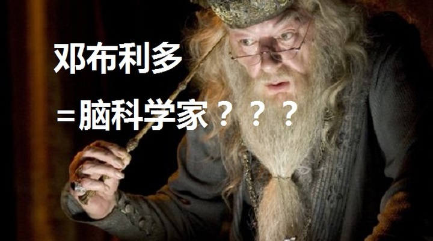
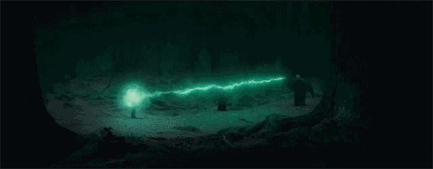
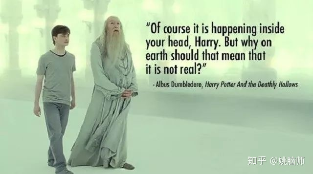
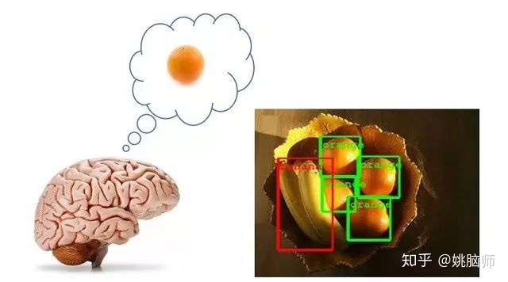
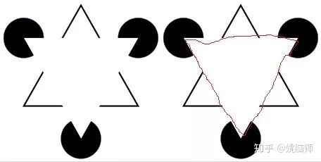
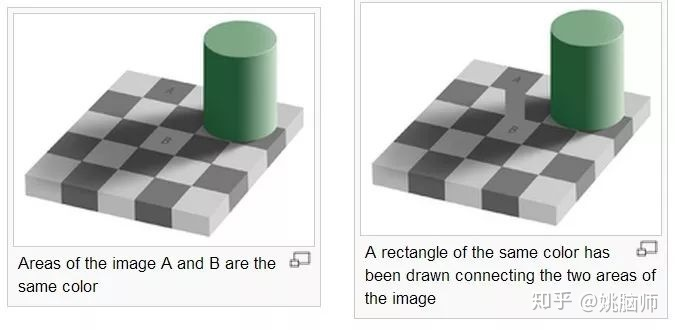
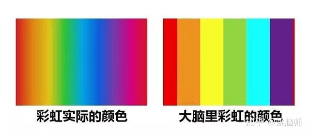

1
1998年5月2日，第二次巫师战争。
伏地魔及其爪牙在霍格沃茨大开杀戒。
哈利波特得知自己身上有伏地魔的灵魂。如果自己不死，伏地魔就能保持永生，魔法世界就永无安宁。
为了战胜伏地魔，哈利在禁林挺身接下了伏地魔的索命咒。

哈利倒下了。
哈利死后，在梦境般的国王十字车站见到了已经死去的邓布利多。
邓布利多告诉哈利，伏地魔失手把自己附在哈利身上的灵魂消灭了，失去了不死之身；哈利可以选择就地复活，再战伏地魔。
哈利一脸问号，自己竟然还可以续命？！

他问邓布利多：“教授，这一切（指梦境）是真的，还是我大脑的想象？”
邓布利多笑笑：“哈利，这当然只是你的想象，但为什么它就不能是真实的呢？”
叹！邓布利多在霍格沃茨是个大巫师，放到今天就是个不折不扣的脑科学家！
因为他明白——大脑以为真实的世界，不过是想象出来的现实。
2
大脑是一个喜欢想象的器官。
这是因为想象能提高大脑感知的效率，减少能量的消耗。
我们知道，一个个体要在多变的环境下生存，就必须保证能量的储备。
如果大脑全面加工外界所有的信息，那么能量消耗就会很大。
于是大脑学会了有选择地加工信息——大脑会根据需要，对重要的信息进行加工，不在无关的信息上浪费能量。
**为了准确而高效地加工重要的信息，大脑通过不断学习来建立该信息的模型。**需要关注该信息时，大脑会先通过想象对其进行预判。一旦想象的信息和接收的信息相符，大脑不需消耗大量能量就能立刻识别，进行互动。

比如我们在生活中通过练习，建立了对橘子的视觉模型（比如圆形+橙色）。在找橘子吃的时候，大脑会不断想象橘子应有的模样。如果视野中的图像和想象的模样不符，大脑就会直接略过不做进一步加工处理。一旦在视野中出现相符的图像，大脑就能立刻识别该物体为橘子，并指挥躯体进行抓取。
3
虽然大脑的想象加快了信息处理的速度，但是它也模糊了我们对世界的感知。
俗话说，眼见为实。
然而科学发现事实并非如此。
在下图中（图左），很多人会“看见”一个白色的三角形将一个实线三角形和三个黑圆形遮盖住了。

但是实际上图中并没有三角形，只有三个V和三个缺角的圆形。
大脑会看见白色的三角形是因为大脑已经建立了三角形的模型。当看到三角形的部分特征时（比如V形的角），大脑就会迅速脑补出三角形的全貌。这个脑补的三角形能以假乱真，以至于大脑误以为是自己看到的。
再如下面的图中大家可以看到方块A要比方块B颜色深（图左）。但是把A和B连起来发现它们的颜色其实是一样的（图右）。大家可以尝试把图放大，用手指把A和B间的连线遮住，就会发现方块A又会比方块B颜色深了。

这是因为大脑已经建立了对光照和阴影的模型，它知道光照下的物体颜色亮，而阴影中的物体颜色深。因为方块B位于阴影中，大脑就脑补出其原有的颜色应该要比阴影下的颜色亮，于是就误认为方块B比方块A颜色亮。一旦把方块A和方块B连起来，建立颜色的参照，大脑对方块B颜色的预期就会改变，因此“看到”方块B和A的颜色是一样的。
以上这些幻觉说明，我们所认识的“客观”世界，是受大脑的主观想象影响的。
这还得了，耳听为虚，眼见不实，这世上还有什么是真实的吗？
4
那要看你怎么定义真实了。
如果说真实是指不以人的意志为转移的客观存在，那想象的世界自然就不是真实的。
按这个定义来看，我们生活中很多“真实存在”的东西都不能算作真实的。
比如我们看见的颜色在物理世界里并不存在。彩虹里包含了波长大约400纳米到700纳米的可见光，可以细分成至少100万种颜色。我们祖先的大脑为了图方便，把彩虹的光归纳成了红橙黄绿青蓝紫七种颜色。七色彩虹的概念虽是想象出来的，但是谁也不会否认它在人类社会的真实存在。

事实上，**想象的世界一旦被许多大脑共享，就成了真实存在的社会现实。**在现代社会中，我们越来越多地活在想象的世界中。
比如金钱是人脑想象出来的价值量度。表面上看它只不过是抽象的符号。但当人类社会普遍接受这个符号并同意用它交换东西，金钱也成了真实的存在。
互联网是人脑想象出来的虚拟世界。表面上看它只不过是超大量的电信号。但当整个人类世界都通过电信号交流时，在互联网上也就出现了社区、商店和媒体。
邓布利多和哈利波特不过是JK罗琳想象出来的人物，但他们的个性和言谈都真实存在我们的大脑里。
大脑想象出来的现实，建造了繁华多彩的城市，踏上了殖民火星的征程。 大脑想象出来的现实，描绘了蒙娜丽莎的微笑，书写了哈姆雷特的癫疯。 大脑想象出来的现实，成就了独立思考的个体，创造了智慧璀璨的文明。
你想要的现实，就种在你的大脑中～